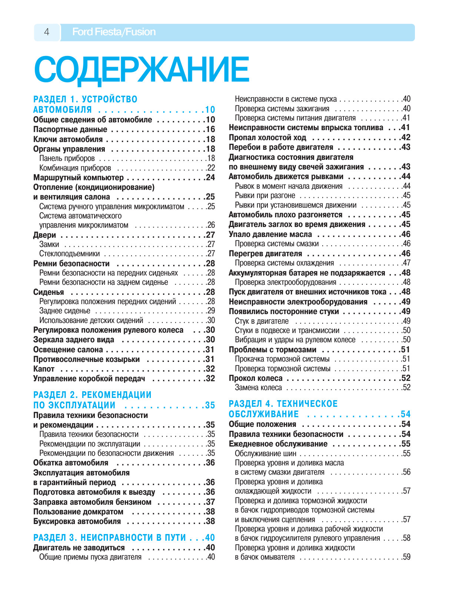

Короткие видеоруководства с закадровым голосом
Реальные пошаговые иллюстрации, моменты затяжки и предупреждения из руководства Ford Fiesta / Fusion с дикторской озвучкой и режимом «Свободные руки» для работы в боксе или в поле.
Нажмите Play для просмотра озвученного пошагового руководства или выберите нужный этап ниже.
Этапы операции и таймкоды озвучки
Каталог руководств: Мои загруженные книги, Авто и Спецтехника
Загружайте любые PDF-руководства по легковым авто, грузовикам, экскаваторам или тракторам — система автоматически разберет страницы, выделит операции ремонта, создаст видеогиды с озвучкой и сохранит книгу в вашем браузере.

Расшифровка диагностических кодов неисправностей OBD-II
База кодов активной книги: силовой агрегат (P), кузовная электроника и подушки SRS (B), шасси и ABS/ESP (C), шина CAN (U).
| Код OBD-II | Система | Расшифровка неисправности по мануалу | Страница |
|---|
Инженерный справочник: Регламент ТО, Моменты затяжки, Объемы ГСМ и Лампы
Сводные таблицы активного руководства для быстрого подбора расходников и динамометрического контроля без перелистывания книги.
Интерактивная карта регламентного ТО
Ключевые моменты затяжки резьбовых соединений
| Агрегат | Соединение / Деталь | Момент затяжки |
|---|
Заправочные объемы и спецификации
| Узел / Система | Объем | Допуск / Материал |
|---|
Применяемые лампы освещения
| Фонарь / Прибор | Тип цоколя | Мощность |
|---|